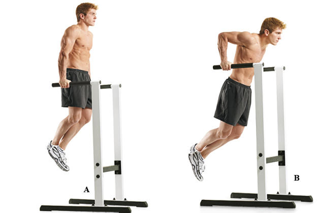
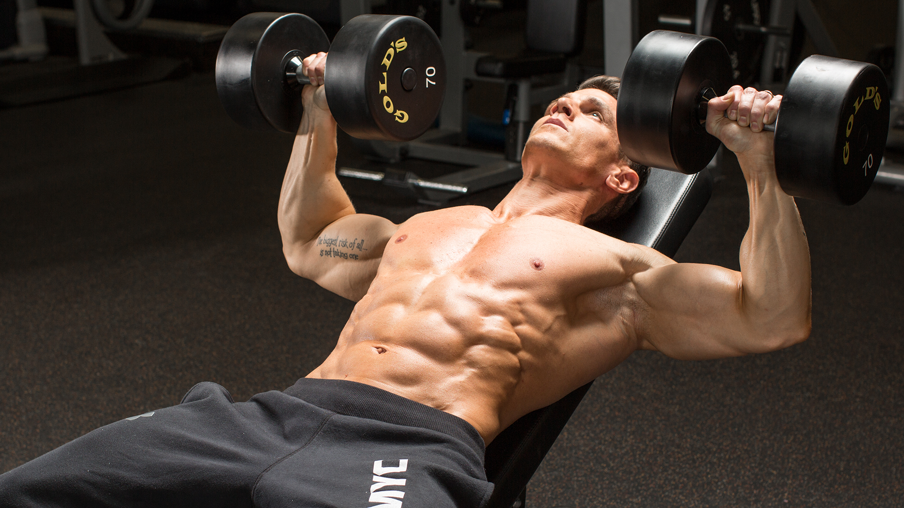

Жим гантелей на горизонтальной скамье
- Упражнение выполняется только с прямой спиной и ровным корпусом.
- Гантели поднимаются вертикально над корпусом.
- Руки вытянуты, но не вывернуты в локтях. Запястья прямые.
- Гантели плавно опускаются почти полностью горизонтально. Руки немного сгибаются. Опытные спортсмены могут увеличить угол более 180 градусов.
- Принимается исходное положение.
Жим штанги лёжа под углом вверх - отличное упражнения, чтобы развить верхнюю часть грудных мышц.
Жим штанги лежа под углом вверх
- Займите положение на наклонной скамье, отрегулировав сиденье так, чтобы гриф располагался на уровне глаз.
- При выполнении жима гриф должен двигаться на уровне верхней линии грудных мышц. Хват в этом упражнении идентичен классическому хвату при жиме на горизонтальной скамье.
- Правильный хват подразумевает вертикальное положение локтей в самой нижней точке амплитуды.
- Вдох делается в момент, когда штанга находится над головой в самой верхней точке амплитуды, и сопровождается опусканием штанги к груди, а выдох делается в момент жима.
- Руки на пике амплитуды выпрямлять до конца не стоит, так как при разгибании рук полностью в работу подключаются трицепсы. В нижней части амплитуды гриф не должен касаться груди.
Жим в хаммере на грудь - является отличным упражнением, поскольку некоторые тренажеры (например, фирмы «Hammer Strenght») позволяют работать каждой рукой в отдельности независимо друг от друга, что является большим преимуществом для тренировки груди.
Жим в хаммере на грудь
- Ноги следует расставить пошире, так как на них и на спину будет приходиться вся нагрузка.
- Движение начинается на выдохе и идет по направленной тренажером траектории.
- Локти при жиме направлены в стороны. К телу их прижимать не нужно.
- Руки в конечной точке амплитуды не нужно полностью выпрямлять в локтях, так как тогда нагрузка переходит на локтевые суставы, что является весьма травмоопасным движением.
- На возвратном движении нужно сделать вдох. Движение должно быть медленным и плавным. Рычаги нельзя бросать.
Жим гантелей на наклонной скамье - незаменимое упражнение на грудь в вашей схеме тренировок, но с помощью регулируемой скамьи вы сможете сделать ряд вещей, которые никогда не смогли бы сделать на нерегулируемой.
Жим гантелей на наклонной скамье
- Ложитесь на скамью, выставите руки с гантелями вверх (полностью выпрямленные) так, чтобы предплечья были перпендикулярны полу. Спина и затылок плотно прижаты к спинке, стопы упираются в пол для фиксации положения тела.
- Начинайте медленно сгибать руки в локтях, опуская гантели вниз.
- Сведите лопатки и максимально выставите грудь вперед для растяжения мышц.
- Без паузы выжмите снаряды в исходное положение в более быстром темпе.
- В верхней точке гантели не должны касаться друг друга.
Сведение рук на наклонной скамье с гантелями это отличное упражнение для формирования симметричной объемной мускулатуры грудной клетки. Однако, это упражнение направлено на проработку всей площади, а именно верхней, средней и нижней части мышц груди.
Сведение рук на наклонной скамье с гантелями
- Исходное положение следующее: лягте на наклонную скамью так, чтобы голова находилась выше плеч. Руки должны быть вытянуты вверх, локти практически прямые, но и полностью выпрямлять их нельзя, так как это может привести к травме суставов из-за возросшей на них нагрузки.
- На протяжении всего движения локти должны быть развернуты в стороны.
- Движение производится по дуге строго в вертикальном направлении.
- Во время движения вниз спортсмен должен сделать вдох.
- Нижняя точка амплитуды находится на уровне грудных мышц.
- Выдох производится во время движения вверх при сведении рук.
СПИНА
Пoдтягивaния - этo бaзoвoe упpaжнeниe для мышц cпины. Bыпoлнять пoдтягивaния мoжнo paзными xвaтaми. Экcпepимeнтиpуя c xвaтaми, мoжнo дaвaть нaгpузку нa paзныe гpуппы мышц.
Подтягивания широким хватом
- Исходное положение — вис на турнике. Широкий хват (примерно на 20 сантиметров больше ширины плеч), кисти направлены ладонями от себя. Руки прямые и расслабленные, удерживается хват, напрягаются только предплечья. Сделайте глубокий вдох.
- Ощущая напряжение широчайших, подтянитесь на перекладине вверх к груди, совершая выдох. Не приводите при этом локти к корпусу, постарайтесь зафиксировать их положение.
- В верхней точке стремитесь к тому, чтобы перекладина оказалась на уровне верхней части груди.
- Опускайтесь в исходное положение плавно, делая вдох.
Tягa гaнтeли в нaклoнe - это базовое упражнение для спины, которое также хорошо нагружает руки и плечи. Оно позволяет эффективно проработать широчайшие мышцы и увеличить толщину верхней части спины.

Tягa гaнтeли в нaклoнe
- Ладонь повернута в сторону бедра.
- Торс нужно наклонить параллельно скамьи, а спину слегка прогнуть в пояснице.
- Рука с гантелью находится перпендикулярно полу. Мышцы расслаблены, плечо немного опущено и максимально растянуто. Сделав выдох, напрягая широчайшую мышцу, подтянуть гантель к бедру максимально высоко. Гантель не должна подниматься выше уровня спины.
- В верхней точке движения гантель нужно задержать на короткое время, после чего вернуть спортивный снаряд в исходное положение на вдохе.
Tягa штанги в наклоне - это базовое упражнение для спины, которое отлично прорабатывает широчайшие мышцы спины, задние части дельтовидных мышц, ромбовидные и трапециевидные мышцы.
Tягa гaнтeли в нaклoнe
- Атлет должен встать перед штангой, поставить стопы на ширине плеч. Колени должны быть немного согнуты.
- Необходимо взять штангу ладонями по ширине плеч, не сгибая руки в локтях, затем выпрямиться. Исходное положение следующее: поясница слегка прогнута, торс наклонен вперед. Угол наклона ориентировочно составляет 30 градусов.
- Ноги согнуты в коленях. Мышцы поясницы должны быть в напряжении.
- Начальная точка амплитуды штанги находится у колен спортсмена, конечная точка амплитуды – у пояса.
- В исходном движении делается вдох, а при тяге штанги к поясу – выдох, после чего на обратном возвратном движении в исходное положение снова делается вдох.
Тяга горизонтального блока узким хватом - это базовое упражнение для спины, позволяющее увеличить толщину мышечного массива спины.
Тяга горизонтального блока узким хватом
- Садитесь на скамью. Уприте стопы в платформы и слегка согните ноги в коленях. Возьмите рукоять так, чтобы в начальной позиции ощущать напряжение. Спина и шея полностью прямые.
- Начинайте подтягивать вес к себе в умеренном темпе. Подводите руки к нижней части живота так, чтобы локти находились ближе к корпусу.
- В пиковой точке отклонитесь назад на 5-10 градусов для максимизации амплитуды.
- После небольшой паузы в более медленном темпе вернитесь в исходную позицию. После этого подайте плечи вперед, чтобы дополнительно растянуть широчайшие.
Гиперэкстензия - физическое упражнение для развития выпрямителей спины, сгибателей голени и ягодичных мышц.
Гиперэкстензия
- Подушки тренажера для упора бедер необходимо заранее выставить по росту, чтобы они располагались под тазом и не мешали свободному движению ровного позвоночника.
- Поставьте стопы на специальные подставки, если это предусмотрено, и поместите пятки под специальные валики для фиксации голени.
- Опустите ровный позвоночник вниз, чтобы от крестца до макушки образовалась прямая линия, полностью расслабьтесь. Поместите руки за головой или держите на груди.
- С выдохом поднимите туловище на одну линию с бедрами, но не выше, сохраняя ровную линию поясничного отдела позвоночника.
- На вдохе плавно опустите ровный позвоночник вниз.
НОГИ
Жим ногами - является одним из лучших упражнений в тренажере на построение массы и силы.
Жим ногами
- Заняв удобное фиксированное положение в тренажере, поставьте стопы на платформу. Это будет исходным положением.
- После, уберите фиксаторы веса с помощью рычагов (обычно, они расположены по бокам сиденья).
- Следующим движением опустите вес платформы посредством сгибания ног в коленях. При выполнении этого движения следует сделать вдох. В нижней точке движения ноги должны образовать прямой угол. Очень важно не отрывать стопы от платформы, а поясницу – от спинки тренажера.
- После чего, с самой низкой точки амплитуды, выдыхая, вытолкните ногами платформу вверх (ноги в коленях полностью не выпрямляйте).
Фронтальные приседания - это базовое упражнение, направленное на развитие передней части бедра, а также увеличения силы и массы ног.
Фронтальные приседания
- Займите положение стоя, поставив ноги на ширине плеч. Спину держите ровно, слегка прогнув в пояснице.
- Поместите штангу на передние пучки дельтовидных мышц, надежно зафиксировав штангу в таком положении руками, скрещенными в районе предплечий. Локти должны смотреть вперед, будучи параллельными полу.
- Снимите штангу со стоек, немного отойдите назад (на 1-2 шага). Заняв исходное положение, убедитесь, что ноги находятся на ширине плеч, а штанга надежно зафиксирована.
- На вдохе выполните глубокое приседание. Зафиксируйтесь в нижней точке на 0,5-1 секунду.
- На выдохе вернитесь в исходное положение.
Разгибание ног в тренажере - это изолированное упражнение, направленное на развитие мышц ног.

Разгибание ног в тренажере
- Спина должна быть прижата к сидению.
- Смещаться и приподниматься с места во время выполнения упражнения нельзя.
- Для надежной фиксации и выполнения концентрированного разгибания возьмитесь за рукояти или сидение тренажера.
- Согнув колени, поместите щиколотки под валик.
- Ноги выпрямляйте с выдохом, после чего зафиксируйте положение на секунду.
- На вдохе медленно опустите ноги в исходное положение.
Выпады - это базовое упражнение, предназначенное для развития ягодиц и мышц бедра (в частности квадрицепса).

Выпады
- Поставьте ступни параллельно друг другу чуть шире бёдер и полностью выпрямитесь.
- Сделайте широкий шаг вперёд и, удерживая туловище прямым, перенесите центр тяжести на выставленную вперёд ногу и присядьте на ней.
- В нижней точке упражнения передняя нога согнута в колене под прямым углом, колено задней ноги «висит» в нескольких сантиметрах над полом (но не касается его!).
- Задержите дыхание и, опираясь на выставленную вперёд ступню, поднимитесь из приседа и отшагните назад передней ногой в исходное положение.
Сгибание ног в тренажере - это простое, но высокоэффективное изолирующее упражнение для бицепса бедра.
Сгибание ног в тренажере
- Заняв исходную позицию лежа лицом вниз, следует зафиксировать положение, взявшись за рукояти для упора и упереть ноги в подушку тренажера.
- При сгибании ног нужно делать выдох, а возвращать ноги в исходную позицию (выпрямлять колени) следует медленно, концентрированно.
- При подтягивании пяток к ягодицам важно выполнять максимальное сокращение в бицепсах бедра, почувствовав их напряжение.
- Следует на пару секунд фиксировать пик сокращения и затем медленно разгибать колени.
- Ноги выпрямлять полностью не всегда лучший вариант. Старайтесь, чтобы мышцы постоянно оставались в тонусе (в напряжении) и не доводите валик до положения, при котором рабочие утяжелители тренажера ложились бы на покоящиеся блоки тренажера.
Становая тяга на прямых ногах - это одно из наиболее продвинутых упражнений на мышцы задней поверхности бедра, используется для наращивания силы и массы мышц задней части бедер.
Становая тяга на прямых ногах
- Расположите штангу в силовой раме на уровне бедер, подберите подходящий вес нагрузки, не стоит брать большой вес, так как это травмирует бицепсы бедра. Обхватите гриф хватом сверху по ширине плеч.
- На вдох выполняйте наклон корпуса вперед с одновременным отведением таза назад, не сгибая коленей. Вес тела должен переместиться на пятки.
- Спина должна находиться в небольшом прогибе, для этого оттягивайте копчик назад и напрягайте пресс. Руки прямые и расслабленные.
- С выдохом отталкивайтесь пятками и разгибайте ровную спину в обратном порядке за счет ягодичных мышц и поясничных разгибателей.
- В верхней точке полностью выпрямитесь.
ПЛЕЧИ
Армейский жим - это базовое упражнение на развитие мышц плечевого пояса и верхней части спины.
Армейский жим
- Станьте перед штангой, поставьте стопы по ширине таза, обхватите штангу хватом чуть шире плеч.
- Поднимитесь с прямой спиной, согните локти и поднимите штангу к верхней части груди (на ключицы).
- Опустите локти в пол, не отклоняйтесь корпусом назад, держите позвоночник силой мышц-стабилизаторов.
- С выдохом поднимите штангу над головой, полностью разгибая локти.
- На вдохе плавно опустите гриф на ключичную часть груди, не бросая штангу.
Жим гантелей сидя - это базовое упражнение, в котором задействованы мышцы сразу нескольких групп. Данное упражнение позволяет развить объем, силу, и выносливость плечевого пояса.

Жим гaнтeлeй cидя
- Локти нужно развернуть в стороны. Локтевые суставы должны располагаться под кистями на протяжении всего движения вверх и вниз.
- Движение гантелей происходит по дугообразной траектории. В верхней точке амплитуды гантели сближаются, но не касаются друг друга.
- Движение выполняется синхронно двумя руками.
- Во время движения верх спортсмен выдыхает, при опускании веса – делает вдох. Нижняя точка амплитуды приходится на уровень шеи, то есть гантели не нужно опускать на уровень плеч.
Махи гантелей в стороны - это базовое упражнение, которое позволяет развить сведний пучок дельт, тем самым увеличить ширину плечевого пояса.
Махи гантелей в стороны
- Взяв инвентарь в руки, встаньте: ноги на ширине плеч, вес следует перенести на носок, спина прямая, руки расположены вдоль туловища. Хват нейтральный – ладони направьте в сторону бёдер.
- Движение гантелей происходит по дугообразной траектории. В верхней точке амплитуды гантели сближаются, но не касаются друг друга.
- Дыхание стандартное: на подъёме рук – выдох, на опускании – вдох.
- Вдохните, и на выдохе поднимите руки с гантелями вверх. Старайтесь преодолеть уровень плеча.
- Доведя руки до верхней точки, можно опускать их вниз. Вверху задерживать руки не следует, подобная задержка никак не повлияет на качество махов через стороны.
Разведение гантелей в наклоне - это базовое упражнение, позволяющее развить задние пучки дельтовидных мышц.
Разведение гантелей в наклоне
- Поставьте стопы на ширине плеч, слегка согнув ноги в коленях, наклонитесь вперед до параллели спины с полом.
- Выдох: выполните махи гантелями через стороны, поднимая руки на уровень плечевых суставов, локти повернуты к потолку. Не помогайте рукам с помощью рывка и раскачивания спины. Важно делать мах более быстрым в верхней фазе, но изолируйте заднюю дельту от вспомогательных движений.
- Вдох: в нижней фазе делайте более медленное движение – плавно опускайте руки вниз.
Махи гантелями перед собой - это изолированное упражнение, направленое на укрепление плечевого пояса с акцентом на передние дельты.
Махи гантелями перед собой
- Исходна позиция - классическая прямая стойка, руки с гантелями перед собой.
- Ладони направлены либо на бедра, либо большие пальцы смотрят друг на друга. Хват сверху усиливает напряжение во фронтальной области.
- Слегка согните руки в локтях, это очень важно, для того чтобы не перенагружать локтевой сустав.
- Плавным движением, без рывков, поднимите обе гантели одновременно (либо попеременно) до уровня вашего носа и также плавно опустите их, но не касаясь бедер, для того чтобы не расслаблять мышцы, а держать их постоянно в напряжении.
- На подъёме делаем выдох, а на опускании вдох.
БИЦЕПС
Пoпepeмeнный пoдъём гaнтeлeй нa бицeпc - одно из самых популярных базовых упражнений для развития мускулатуры рук.

Пoпepeмeнный пoдъём гaнтeлeй нa бицeпc в пoлoжeнии cтoя
- Стоя или сидя, ноги расположены по ширине плеч.
- В руках держим гантели, расположив их по сторонам возле бедер. Выдох: сгибайте одну руку в локте, работая за счет бицепса.
- Вдох: выполняйте разгибание локтя в три раза медленнее, чем на сгибании, плавно выполняя движение.
"Молоток" - распространенное упражнение для проработки бицепса.
"Молоток"
- Исходное положение — руки с гантелями опущены книзу, кисти развернуты к корпусу, трицепсы прижаты к телу.
- С неподвижным предплечьем сгибаем левую руку до полного сокращения пучков. Снаряд должен оказаться на плечевой линии.
- Сильно напрягая бицепс, задерживаемся в короткой паузе.
- Возвращаем руку в исходное положение.
Подъем штанги на бицепс - базовое упражнение для проработки двуглавых пучков, передней зубчатой, плечелучевой, абдоминальных.
Подъем штанги на бицепс
- Из классической позиции берем штангу — ладони направлены вверху, гриф на уровне бедер.
- Грудь подаем вперед, плечи отводим назад, пресс напрягаем.
- Чтобы нивелировать напряжение с квадратной мышцы спины, слегка сгибаем колени.
- Силой бицепсов тянем штангу вверх. Траектория подъема напоминает полуокружность.
Сгибания на наклонной скамье стоя - это изолированное упражнение. Основная нагрузка при его выполнении, ложится на двуглавую мышцу плеча(бицепс).
Сгибания на наклонной скамье стоя
- Устраиваемся на тренажере: стопы упираются в пол, спина – к опоре.
- Поочередно сгибая локтевые суставы, подносим гантели к плечам.
- Сохраняя стабильное положение локтей, в верхней точке разворачиваем запястья в обратную сторону.
Сгибания рук в нижнем блоке - изолированное упражнение, направленное на проработку двуглавой мышцы плеча (бицепса).
Сгибания рук в нижнем блоке
- Верхним хватом цепляемся за держатель троса (гриф E-Z или прямой) нижнего блока
- Трицепсы прижимаем к телу.
- Сохраняя статичными предплечья, всей мощью бицепсов сгибаем на выдохе руки, пока гриф не окажется в верхней части груди.
- После кратковременной задержки опускаем.
ТРИЦЕПС
Французский жим со штангой - упражнение в бодибилдинге и пауэрлифтинге для развития трицепса.
Французский жим со штангой
- Поместите гриф на специальных стойках для французского жима, либо удерживайте гриф на груди, разместите ладони на грифе по ширине плечевых суставов, и медленно ложитесь на спину. В нижней точке поднимите штангу вверх, полностью выпрямив локти.
- Прижмите поясницу к скамье, если невозможно – поставьте стопы на скамью, таким образом, убирая прогиб поясничного отдела.
- Держите штангу над плечами, не отводите локти в стороны.
- На вдох опускайте штангу ко лбу, но не касаясь. Движение происходит только в локтевом суставе.
- С выдохом разгибайте локти до конца, не отводя их при подъеме через стороны.
Жим узким хватом - отличное многосуставное упражнение, увеличивающее объем и силу трицепса.
Жим узким хватом
- Ложитесь на скамью, плотно прижавшись к ней тазом, лопатками и затылком. Возьмите гриф так, чтобы между руками было расстоянии 26-30 см.
- Снимайте гриф с опор и удерживайте его над грудью. Начинайте медленно и подконтрольно опускать снаряд к нижней части груди.
- Без паузы более мощным движением выталкивайте вес вверх.
Разгибание рук в верхнем блоке - отличное упражнение, которое нагружает все пучки трицепса.
Разгибание рук в верхнем блоке обычным хватом
- Станьте лицом к Кроссоверу, возьмите прямую рукоять верхнего блока хватом сверху по краям.
- Поставьте стопы по ширине таза и прижмите локти к корпусу. Предплечья расслаблены, рукоять на уровне плеч.
- Выдох: выполните разгибание рук, не отрывая локтей, опустив рукоять полностью на бедра.
- Вдох: плавно и без рывка согните локти.
Отжимания на брусьях - это базовое упражнение для развития всех жимовых мышц.

Отжимания на брусьях
- Сделайте выход и займите стартовую позицию. Руки должны быть полностью выпрямленными, тело формирует ровную линию, перпендикулярно полу.
- Медленно опускайте корпус вниз, сгибая руки.
- В нижней точке сделайте минимальную паузу и вернитесь в исходную позицию.
Жим гантели из-за головы одной рукой - это изолирующее упражнение, помогающее доработать отстающие пучки трицепса.
Жим гантели из-за головы одной рукой
- Стоя или сидя, возьмите гантель в одну руку и поднимите над плечом.
- Вторую руку держите свободно либо придерживайте рабочую руку ниже локтя, если нужна дополнительная фиксация.
- Удерживая локоть у головы, на вдохе опускайте гантель максимально за голову, растягивая трицепс до максимума.
- С выдохом разогните локоть.
Пpoгpaммa тpeниpoвoк в тренажерном зале

Понедельник - грудь/трицепс
- Жим лежа - 4 подхода по 8-10 повторений;
- Жим штанги лёжа под углом вверх — З пoдxoдa пo 10-12 пoвтopений;
- Жим гантелей на наклонной скамье — З пoдxoдa пo 10-12 пoвтopений;
- Французский жим со штангой — 4 пoдxoдa пo 8-10 пoвтopений;
- Разгибание рук в верхнем блоке — 3 пoдxoдa пo 10-12 пoвтopений;
- Отжимания на брусьях — 3 пoдxoдa пo 12-15 пoвтopений;
Среда - спина/бицепс
- Гиперэкстензия - 3 подхода по 15 повторений;
- Становая тяга - 4 подхода по 8-10 повторений;
- Tягa штанги в наклоне — З пoдxoдa пo 10-12 пoвтopений;
- Тяга горизонтального блока узким хватом - 3 пoдxoдa пo 12-15 пoвтopений;
- Подъем штанги на бицепс - 4 пoдxoдa пo 8-10 пoвтopений;
- "Молоток" - 3 пoдxoдa пo 10-12 пoвтopений;
- Сгибания на наклонной скамье стоя - 3 пoдxoдa пo 12-15 пoвтopений;
Пятница - ноги/плечи
- Приседания со штангой - 4 подхода по 8-10 повторений;
- Жим ногами - 4 пoдxoдa пo 10-12 пoвтopений;
- Разгибание ног в тренажере - З пoдxoдa пo 12-15 пoвтopений;
- Армейский жим - 4 подхода по 10-12 повторений;
- Жим гантелей сидя - З пoдxoдa по 12 пoвтopений;
- Махи гантелей в стороны - З пoдxoдa по 15 пoвтopений;